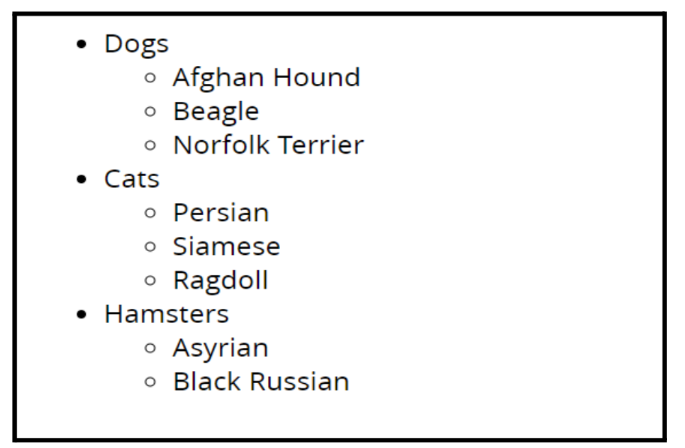
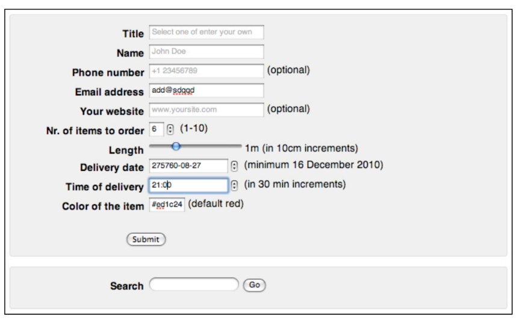
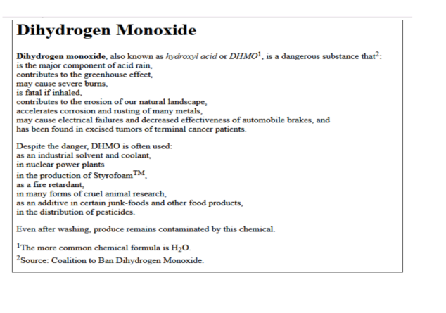

Day 2 | Task 1 Demo
Follow the steps to complete the exercise on Nested List:
- First enter and mark up the following list as an unordered list.
Dogs
Cats
Hamsters
- Now add the following sublist of types of dogs. Do this by creating a new ordered list and inserting it into the dogs list item, just before the closing " " tag.
- Now create similar lists for cats and hamsters.
Your final document should look something like this:

Afghan Hound
Beagle
Norfolk Terrier
Lumphead
Day 2 | Task 2 Demo
Write html code to display the webpage having this form:
Day 2 | Task 3 Demo
Below is the content which is not in a proper readable format. By following the instructions lets format the text. The changes you need to make are:
- The page should have the title (changes the tab name) Dangers of DHMO.
- Mark the first line with the tags for the biggest heading.
- Give the next two words a strong (bold) appearance.
- Emphasize (italicize) the first occurence of hydroxyl acid and DHMO
- All numbers except the 2 in H2O should be superscripted like this : 1 .
- Mark the letters TM behind Styrofoam as superscript.
- The 2 in H2O should be subscripted.
- Put paragraph tags around the different paragraphs of the article
- If you would like to keep the original spacing on the lists, you will want to use break tags after each comma.
“Dihydrogen Monoxide Dihydrogen monoxide, also known as hydroxyl acid or DHMO1, is a dangerous substance that2: is the major component of acid rain, contributes to the greenhouse effect, may cause severe burns, is fatal if inhaled, contributes to the erosion of our natural landscape, accelerates corrosion and rusting of many metals, may cause electrical failures and decreased effectiveness of automobile brakes, and has been found in excised tumors of terminal cancer patients. Despite the danger, DHMO is often used: as an industrial solvent and coolant, in nuclear power plants in the production of StyrofoamTM, as a fire retardant, in many forms of cruel animal research, as an additive in certain junk-foods and other food products, in the distribution of pesticides. Even after washing, produce remains contaminated by this chemical. 1The more common chemical formula is H2O. 2Source: Coalition to Ban Dihydrogen Monoxide.”
The document should look like this:
